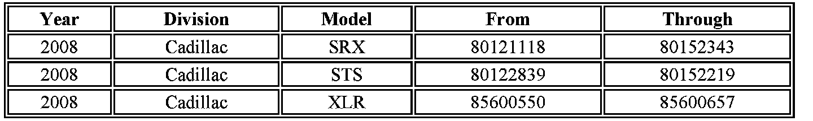
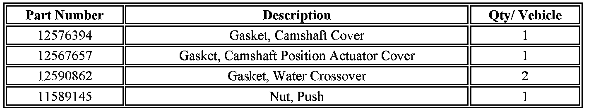
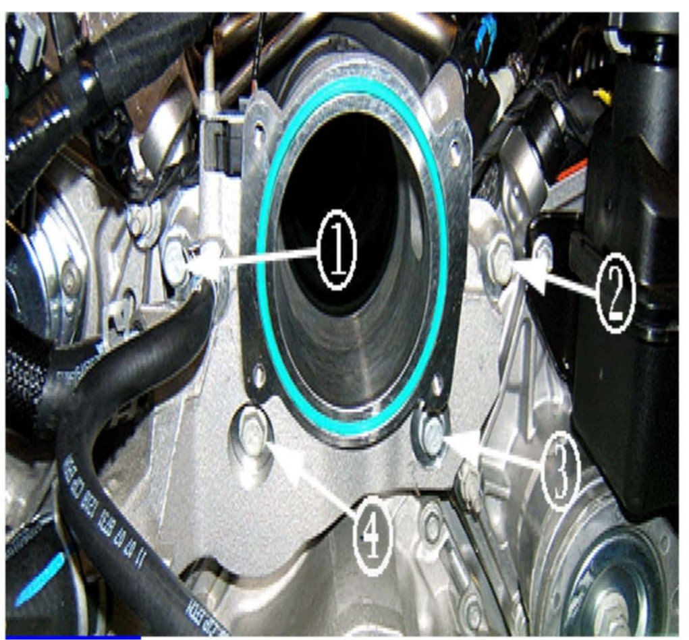
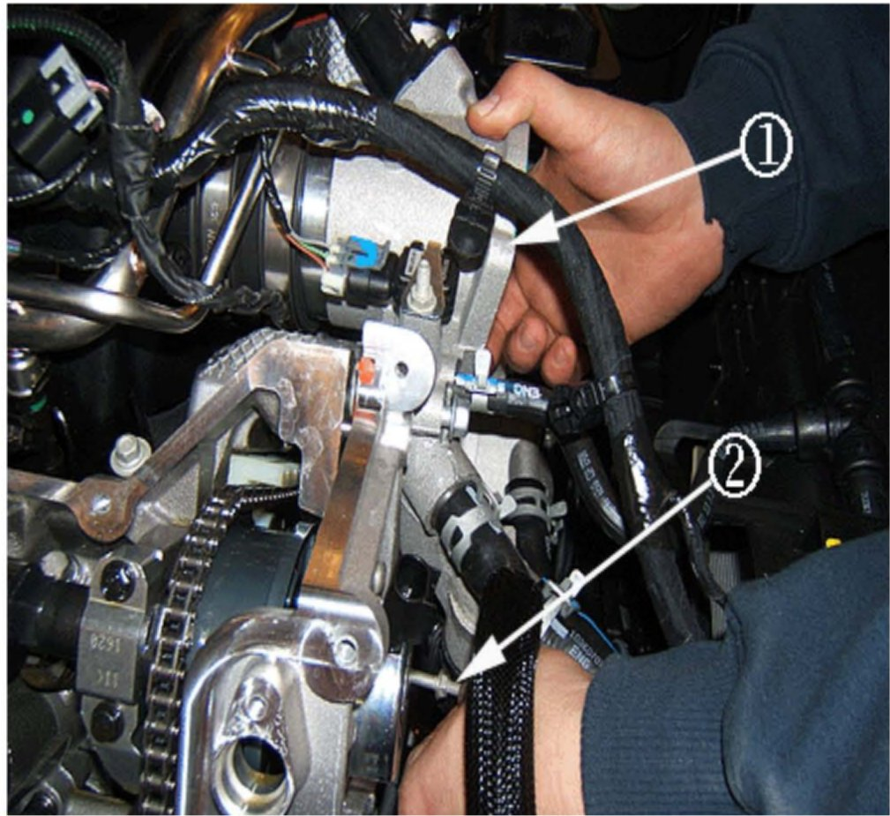
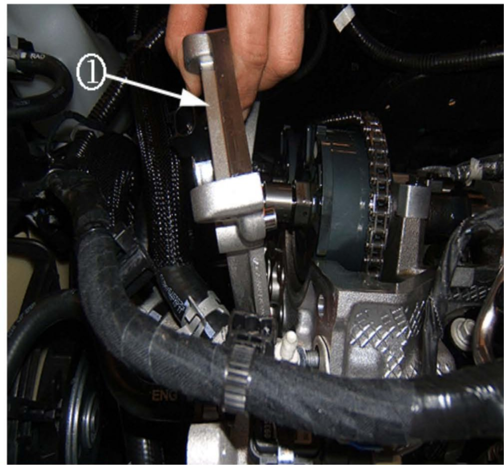
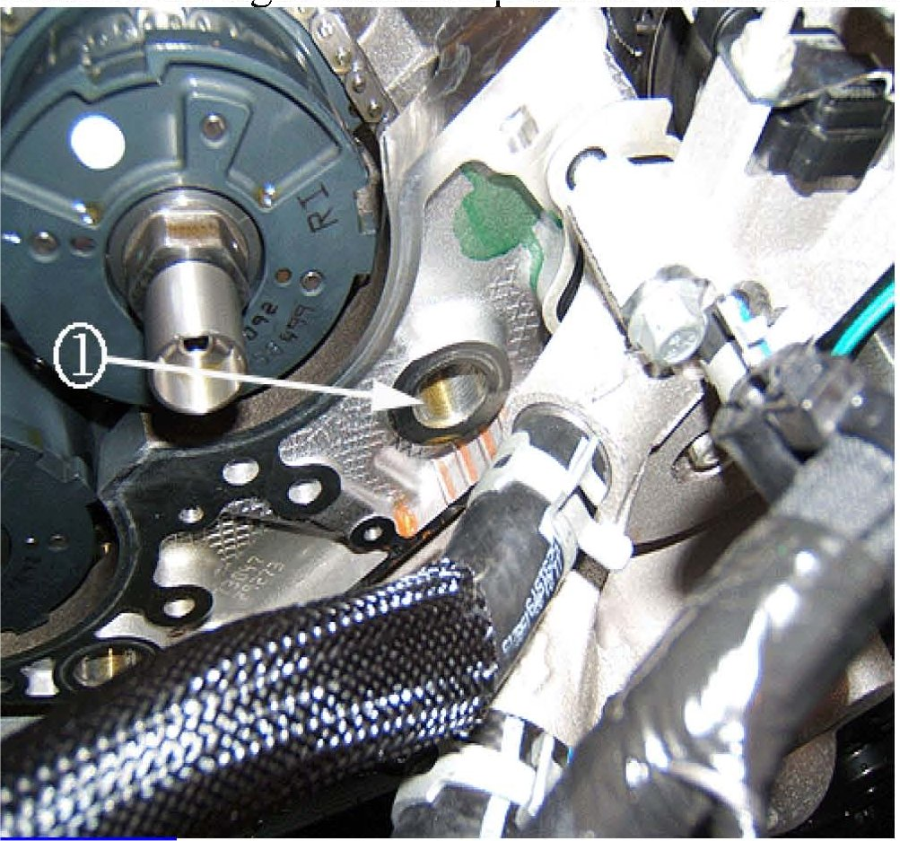
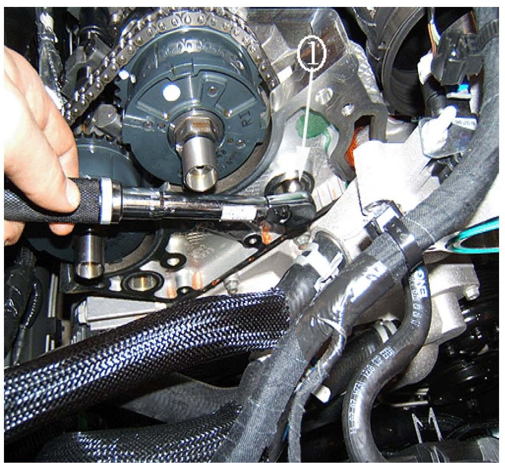
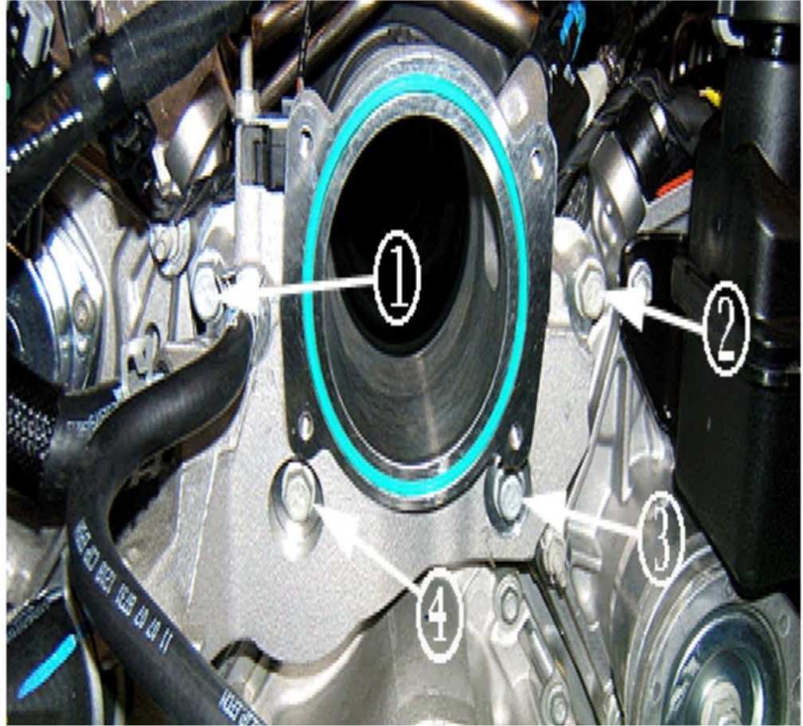
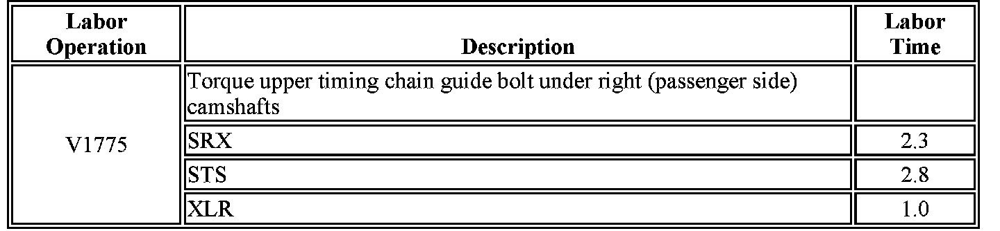

Campaign - Timing Chain Guide Bolt Torque
Subject:Service Update for Inventory and Customer Vehicles - Timing Chain Bolt Low Torque - Expires with Base Warranty
# 07330 - (12/13/2007)
Models:
2008 Cadillac SRX, STS, XLR
Equipped with 4.6L V8 (RPO LH2 - VIN A) Engine
THIS SERVICE UPDATE INCLUDES VEHICLES IN DEALER INVENTORY AND CUSTOMER VEHICLES THAT RETURN TO THE DEALERSHIP FOR ANY REASON, AND WILL EXPIRE AT THE END OF THE INVOLVED VEHICLES NEW VEHICLE LIMITED WARRANTY PERIOD.
Purpose
This bulletin provides a service procedure to torque the upper bolt that retains the timing chain guide under the right hand (passenger side) camshafts to specification on certain 2008 model year Cadillac SRX, STS, XLR, equipped with a 4.6L V8 (RPO LH2 - VIN A) engine.
This service procedure should be completed as soon as possible on involved vehicles currently in dealer inventory and customer vehicles that return to the dealer for any type of service during the New Vehicle Limited Warranty coverage period.
Vehicles Involved

A list of involved vehicles currently in dealer inventory is available on the "Service Update Bulletin Information" link under the "Service" tab in DealerWorld (GM US), or attached to the Dealer Communication (Canada), used to release this bulletin. Customer vehicles that return for service, for any reason, and are still covered under the vehicle's base warranty, and are within the VIN breakpoints shown, should be checked for vehicle eligibility in the appropriate system listed below.
IMPORTANT:
Dealers are to confirm vehicle eligibility prior to beginning repairs by using the GM Vehicle Inquiry System (GMVIS). Not all vehicles within the above breakpoints may be involved.

Parts Information
Parts required to complete this service update are to be obtained from General Motors Service and Parts Operations (GMSPO). Please refer to your "involved vehicles listing" before ordering parts. Normal orders should be placed on a DRO = Daily Replenishment Order. In an emergency situation, parts should be ordered on a CSO = Customer Special Order.
IMPORTANT:
Due to the small number of vehicles involved and due to limited initial parts availability, dealers are encouraged not to order parts for use as shelf stock.
Service Procedure
1. Remove the right cam shaft cover. Refer to Camshaft Cover Replacement - Right Side in SI.
2. Remove the water outlet housing. Refer to Water Outlet Housing Replacement (LH2) in SI.
2.1. Drain the coolant below the water outlet housing. Refer to Draining and Filling Cooling System in SI.

2.2. Remove the two upper (1) and (2) outlet housing bolts. Remove the two lower water outlet housing bolts (3) and (4). Mark the two lower bolts, because they are longer, for use later in the procedure.
3. The following removal and installation steps in SI for the water outlet housing replacement are not necessary for this procedure and do not apply:
^ MAP Sensor
^ EVAP solenoid and/or hose
^ All coolant hoses
^ Intake manifold duct clamp
^ Remove the water outlet housing from the vehicle.
4. Remove the right side camshaft position actuator housing. Refer to Camshaft Position Actuator Housing Replacement - Right Side in SI.
5. The following removal and installation steps in SI for the Camshaft Position Actuator Housing Replacement - Right Side are not necessary for this procedure and do not apply:
5.1. Right intake cam shaft position actuator solenoid bolts.
5.2. Right intake camshaft position actuator solenoid.
5.3. Right intake camshaft position actuator solenoid alignment plug and discard.
5.4. Right exhaust camshaft position actuator solenoid bolts.
5.5. Right exhaust camshaft position actuator solenoid.
5.6. Right exhaust camshaft position actuator solenoid alignment plug and discard.
5.7. Camshaft position actuator solenoid alignment.

6. Pull the water outlet housing forward to gain access to the camshaft position actuator housing bolts/studs (1). Remove the right camshaft position actuator housing bolts/studs (2). See above illustration.

7. Remove the right cam shaft position actuator housing (1) from the vehicle.

8. Locate the upper right secondary camshaft drive chain guide bolt (1).

9. Tighten the guide bolt (1).
Tighten
Tighten the upper right secondary camshaft drive chain guide bolt to 25 N.m (18 lb ft).
10. Install a new gasket to the camshaft position actuator housing.
11. Install the right cam shaft position actuator housing to the right cylinder head.
12. Install the actuator housing bolts/studs.
Tighten
Tighten the actuator housing bolts and studs to 10 Nm (89 lb in).
13. Install the water outlet housing. Refer to Water Outlet Housing Replacement (LH2) in SI.
Notice:
Take care to assure the CPA wiring harness is not pinched by the water outlet housing.
13.1. Install the new coolant passage gaskets to the water outlet housing.

13.2 Tighten all four water outlet housing bolts. Install the longer (marked) bolts to the lower water outlet housing (3) and (4). Then install the two shorter bolts (1) and (2) to the upper water outlet housing.
Tighten
Tighten all four water outlet housing bolts to 25 Nm (18 lb ft)
14. Install the right camshaft cover. Refer to Camshaft Cover Replacement - Right Side in SI.
15. Top off the coolant and purge the air from the cooling system. Refer to Draining and Filling Cooling System in SI.
Claim Information

For vehicles repaired under this service update, use the table.

Disclaimer